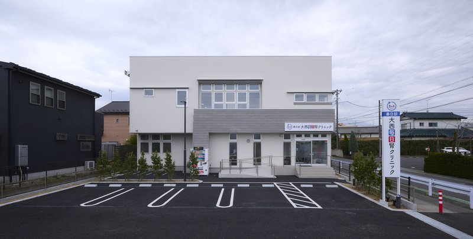
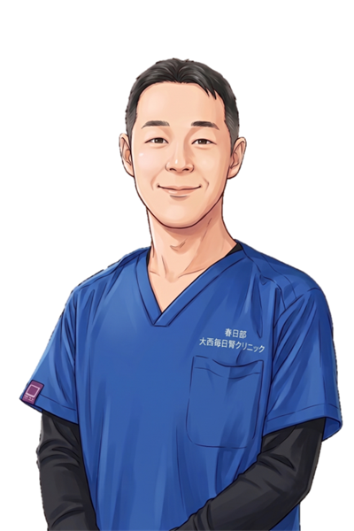
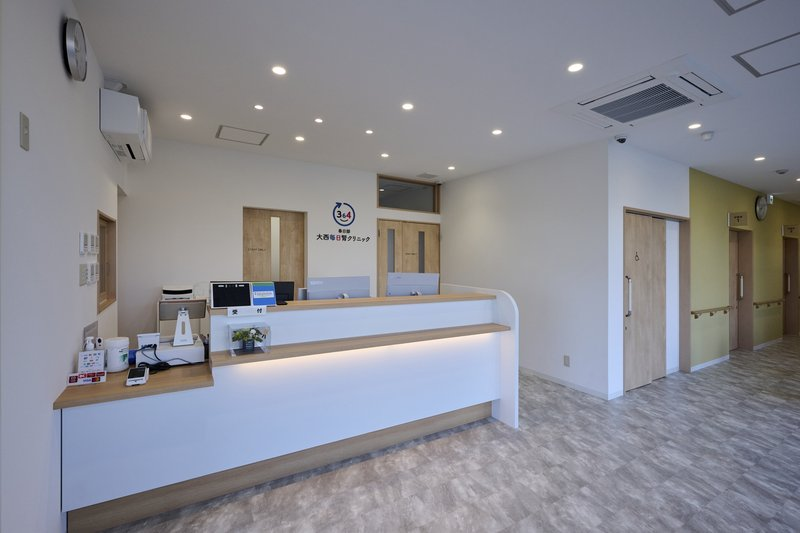
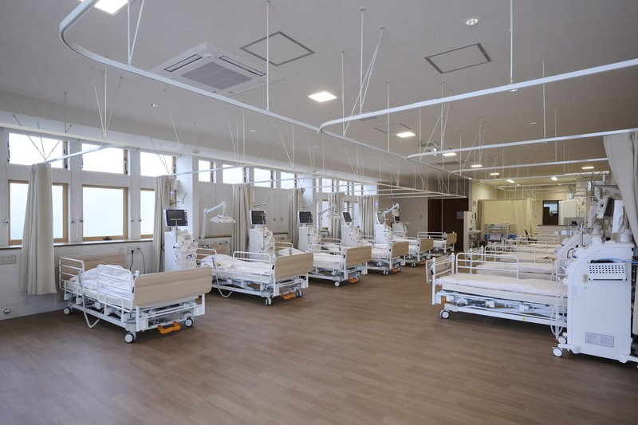
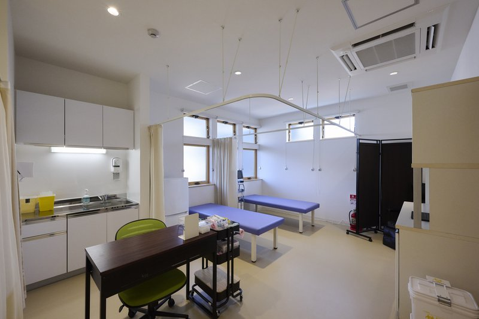
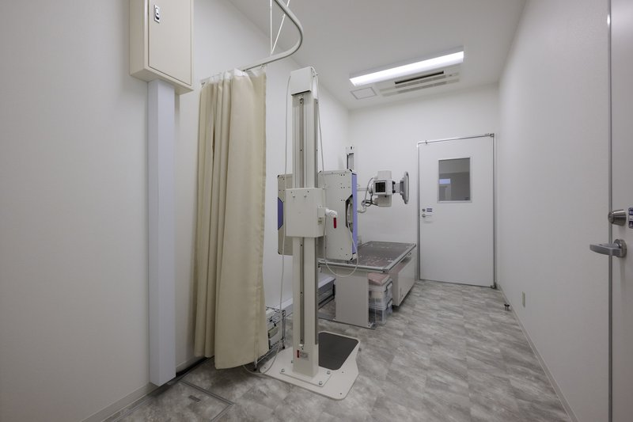
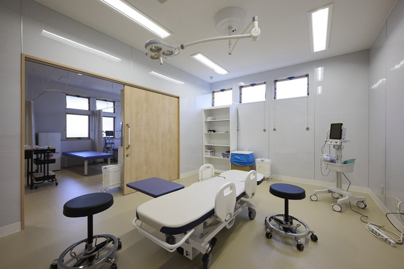
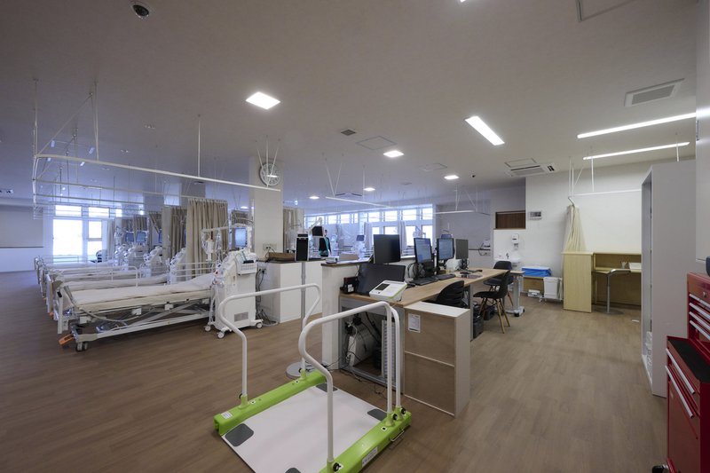
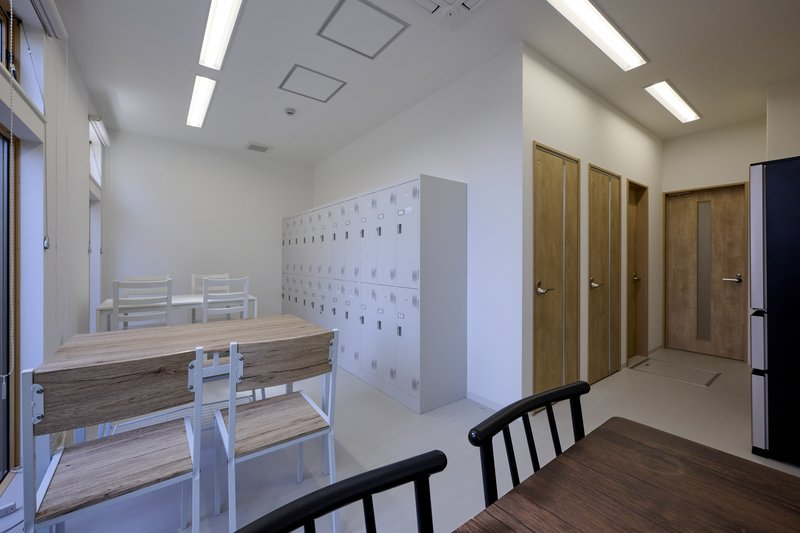

幸福の体感を、
すべての人へ。
春日部大西毎日腎クリニックは、日本最高のヘルスケアサービスを通じて、だれもが100歳、そしてその先まで「生きたい」と心から思える人生を提供することを目指しています。
スタッフ一人ひとりが自己実現できる、温かく活気に満ちた「夢をかなえる舞台」がここにあります。


スタッフが幸せであってこそ、
患者様に「幸福の体感」を届けられる。
「当院は、働くスタッフが自己実現し、夢をかなえるための舞台です。」
春日部大西毎日腎クリニック 院長の大西です。私たちは、ヘルスケアサービスを通じて、患者様はもちろん、ここで働くスタッフや取引先を含む「すべての人々の幸せ」に貢献することを目指しています。
医療の質は、現場で働くスタッフの力そのものです。スタッフ一人ひとりが個性や可能性を尊重され、心にゆとりを持って働けてこそ、初めて患者様に最良の医療と優しさを届けることができます。
だからこそ当院は、単なる労働の場ではなく、あなたの人生の夢や目標をかなえる「舞台」でありたいと考え、環境づくりを何よりも大切にしています。
医療事務の1日の仕事の流れ
当院の医療事務には「受付」「会計」「医師事務」「透析事務」の4つの担当業務があり、適性や希望に合わせて配属されます。以下は代表的な一日のスケジュール例です。
始業：掃除・朝礼
気持ちよく患者様をお迎えするための準備を行い、朝礼で一日の連絡事項を共有します。
受付開始
自動ドアが開き、患者様の受付を開始。明るく丁寧な対応でお迎えします。
診療開始
午前診療スタート。受付窓口や会計、カルテ入力などそれぞれの担当業務を順次行います。
午前受付終了・締め作業
午前の新規受付を終了し、カルテのチェックやレセプトコンピュータの点検を進めます。
診療終了、締作業
午前の診療がすべて終了。午前の会計チェックや締め作業、および午後に向けた準備を進めます。
昼休憩
明るいスタッフルームでしっかりリラックス。お弁当を食べたり、おしゃべりをして過ごします（12:45〜13:45）。
業務再開
午後業務に向けて準備を開始。窓口の整理や午後に向けた連絡事項の確認を行います。
午後受付開始
午後の患者様の受付をスタート。明るく丁寧に対応します。
午後診療開始
午後の診療が本格的にスタート。それぞれの担当に分かれて受付や会計業務を進めます。
午後受付終了
本日の受付窓口業務を終了。精算の準備や、カルテの整理を開始します。
診察終了・締め作業
診療終了。一日の窓口会計締めを行い、翌日の診療に向けて準備をします。
終礼
全員で本日の振り返りと、翌日に向けた引き継ぎ確認を行います。
終業・定時退社
残業はほぼありません。終礼が終わったらスムーズに退勤し、プライベートの時間を大切にします。
クリーンで充実した院内設備
働くスタッフにとっても、患者様にとっても、心地よく清潔で最新鋭の環境を整えています。

受付 (Reception)
優しく明るい日差しが差し込む受付です。患者様を最初にお迎えする、クリニックの「顔」となる場所です。

透析室 (Dialysis Room)
全床に最新の透析装置を完備し、広々とした明るい空間で患者様に安全な治療を提供しています。

処置室 (Procedure Room)
点滴や注射、各種処置を行うための処置室です。ベッド間はカーテンで仕切られ、プライバシーに配慮されています。

レントゲン室 (X-ray Room)
最新のデジタルレントゲン装置を完備し、迅速かつ的確な診断を可能にするクリーンな撮影室です。

手術室 (Operation Room)
無影灯などの高度な医療設備を備え、各種処置や小手術を迅速かつ安全に行うことができます。

スタッフステーション (Station)
機能的で視界が広く、スタッフ間の連携がスムーズに行える設計です。何でも相談しやすい雰囲気です。

スタッフルーム (Staff Room)
スタッフがしっかりと休憩を取れるよう、明るく落ち着いた木目調のテーブルを備えた休憩室を用意しています。
現在募集中の職種
あなたの経験や資格を活かせる最適なポジションをお選びください。